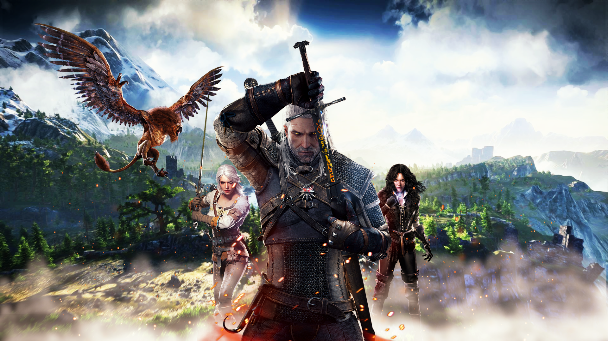
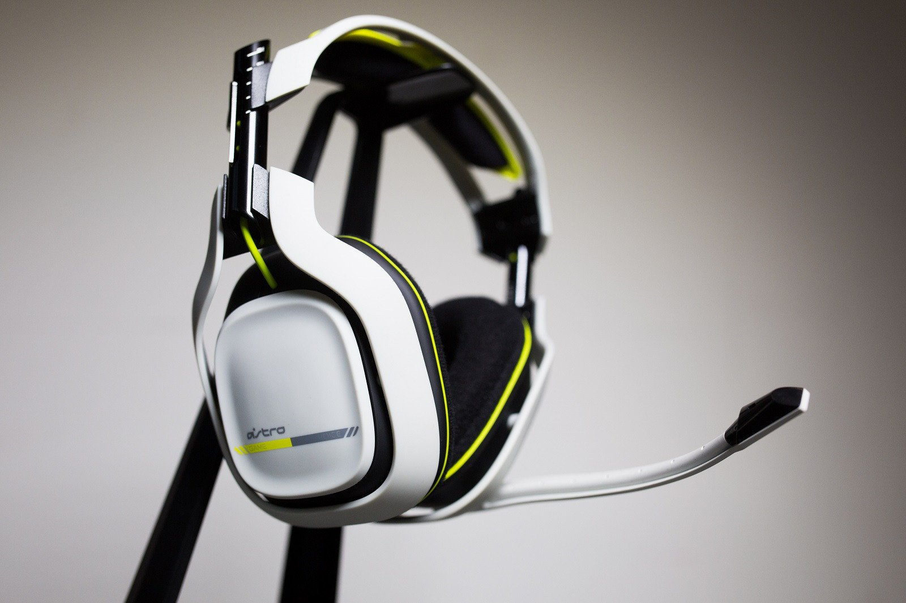
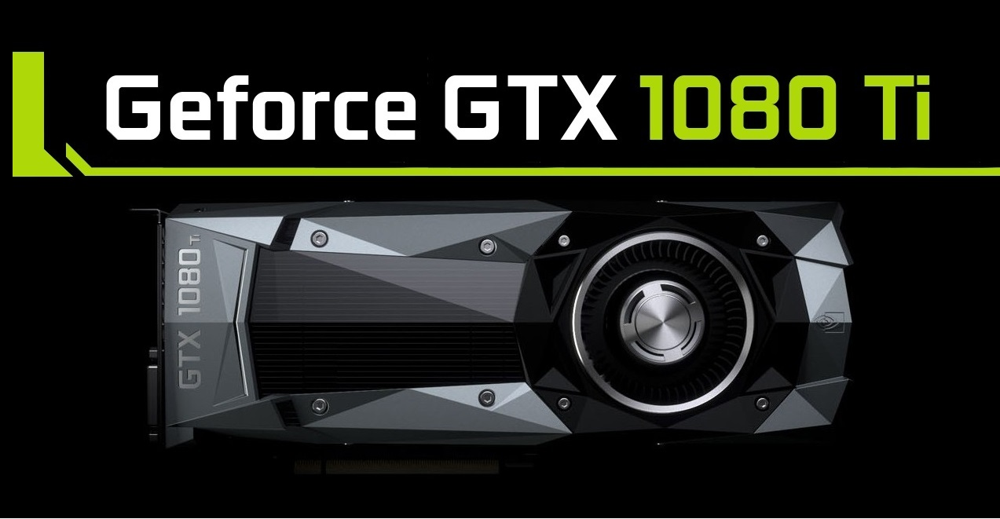

PC

Tom Clancy's Rainbow Six Siege
The game puts heavy emphasis on environmental destruction and cooperation between players. Players assume control of an attacker or a defender in different gameplay modes such as hostage rescuing, securing a area or bomb defusing. The game has no campaign, but features a series of short missions that can be played solo. These missions have a loose narrative, focusing on recruits going through training to prepare them for future encounters with the White Masks, a terrorist group that threatens the safety of the world. The Multiplayer of Rainbow 6: Siege is where the Rainbow uses high tech simulations for training. So in conclusion the Rainbow train against each other to become powerful in order to face off against the White Masks terrorist organisation.

The Witcher 3: Wild Hunt
The Witcher 3: Wild Hunt is a 2015 action role-playing video game developed and published by CD Projekt. Based on The Witcher series of fantasy novels by Polish author Andrzej Sapkowski, it is the sequel to the 2011 game The Witcher 2: Assassins of Kings. Played in an open world with a third-person perspective, players control protagonist Geralt of Rivia, a monster hunter known as a Witcher, who is looking for his missing adopted daughter on the run from the Wild Hunt: an otherworldly force determined to capture and use her powers. Players battle the game's many dangers with weapons and magic, interact with non-player characters, and complete main-story and side quests to acquire experience points and gold, which are used to increase Geralt's abilities and purchase equipment. Its central story has several endings, determined by the player's choices at certain points in the game.

Astro Gaming A50 Wireless Gaming Headset
As one of the most expensive headsets on the market, the Astro A50 is an excellent choice for those who are willing to invest over £250. It’s well constructed, sounds great and delivers an immersive surround-sound experience.
However, there are alternative options on the market, many of which offer better value, added flexibility and superior audio quality.

Nvidia GeForce GTX 1080 Ti Graphics Card
The 1080 Ti represents the pinnacle of Nvidia’s 2016/17 graphics card line-up, pitching itself as a 4K-and-beyond graphics card. It sits at the top of the range, £200 more expensive than the recently price-dropped GTX 1080 and £300 below the similarly-specified Titan X, which is all but irrelevant now for gamers.
This is the third “80 Ti” card Nvidia has introduced, following the 780 Ti and 980 Ti. The Ti brand normally means a £100 premium over the regular “80” card, but with performance that looks forward to the next generation of games and monitors – and that’s exactly what the 1080 Ti is. This monstrous card is what Nvidia hopes will carry early adopters into the era of next-gen VR, high-refresh-rate 4K gaming and even 5K.
It’s the most expensive Ti product ever, but for those who can stump up the cash, it’s a card that really looks to the future.